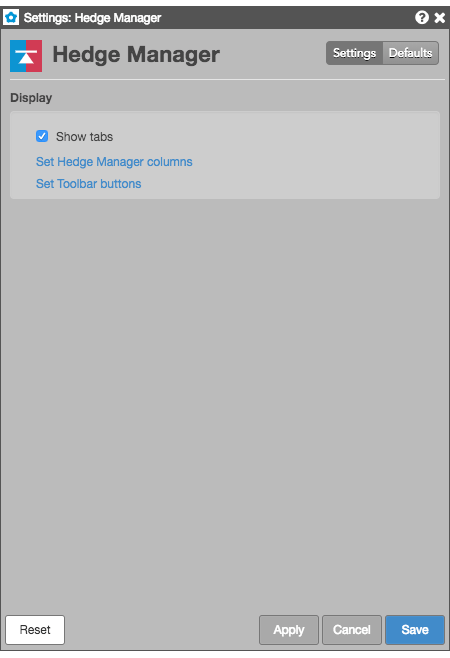

Right-click in the widget to open the context menu and select the following settings:
These settings affect only the selected Hedge Manager widget. To update the default settings with these value for newly-opened Hedge Manager widgets, or to apply them to existing opened widgets, click Defaults.

{% include settings/hedge-mgr-settings.html %}